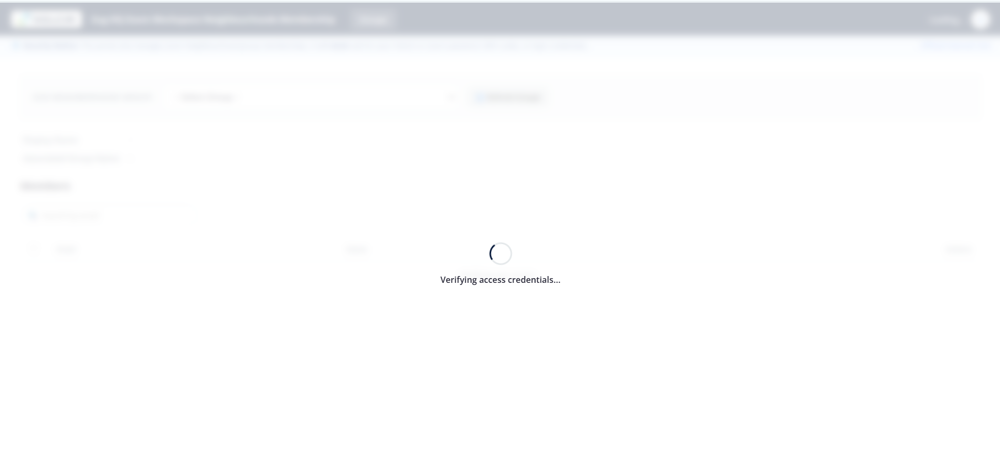
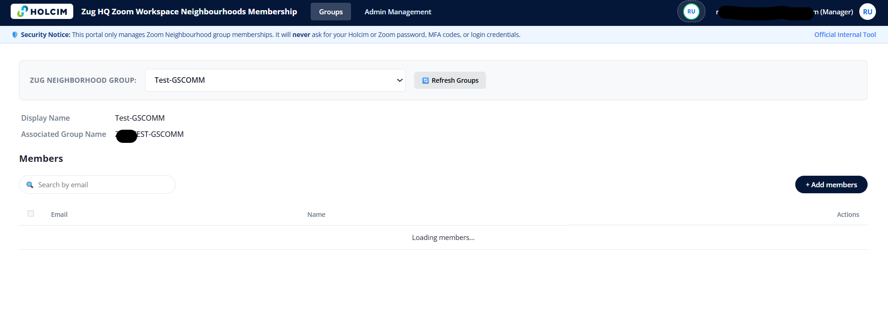
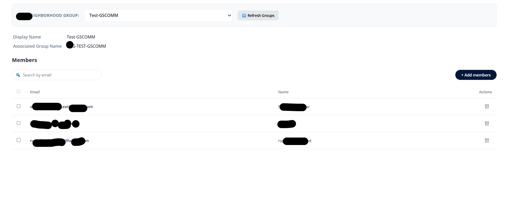
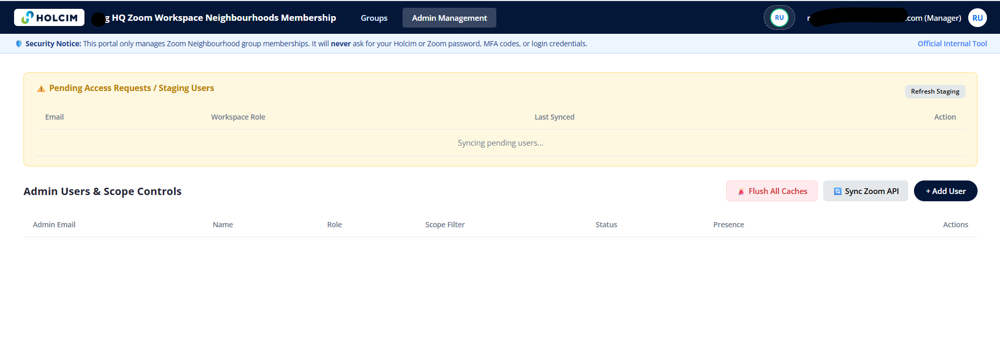
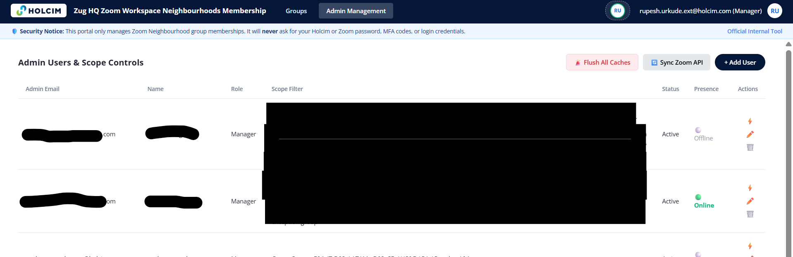

Project Overview
The Zoom Workspace Neighbourhoods Membership Portal is an internal Google Apps Script web application built to manage user memberships across prefix-filtered Zoom workspace groups. Its primary purpose is to let delegated administrators view, add, and remove members within their assigned groups without requiring full Zoom Admin Console privileges.
Business Problem
Managing workspace neighbourhood memberships directly in the Zoom Admin Console required elevated administrative rights that could not be safely granted to local site coordinators. Additionally, manual group tracking risked unauthorized scope modifications, stale permission caches, and unverified access requests.
Solution Implemented
A custom web portal was built using Google Apps Script (Code.gs and Index.html) backed by a restricted Google Sheets database and integrated with the Zoom REST API and Google Workspace Security Groups. The application enforces tiered Role-Based Access Control (RBAC), automates group synchronization and data validation, and incorporates pre-production security controls.
Key Features
- Tiered Role-Based Access Control (RBAC): Supports three distinct roles—Owner, Manager, and Site Admin—enforcing scope-level authorization checks on both the frontend UI and backend server functions.
- Bi-Directional Zoom API Synchronization: Fetches prefix-filtered Zoom groups and member lists into Google Sheets, while writing member additions and removals directly to Zoom via Server-to-Server OAuth.
- Workspace Security Group Staging & Onboarding: Syncs members from a designated Google Workspace Security Group into a staging queue so Managers or Owners can assign group scopes and send automated access request notifications.
- Emergency Cache Invalidation: Provides per-user and global cache-flushing controls backed by CacheService so revoked user permissions take effect immediately during security incidents.
- Directory User Autocomplete & Live Presence: Integrates Google People API and internal roster search for user lookup alongside real-time online presence indicators for active administrators.
- Audit Logging & Phishing Awareness: Records all administrative actions in an Execution log sheet (with structured JSON support for Google Cloud Logging) and displays a persistent security notice banner against credential phishing.
Technology Stack
- Google Apps Script (JavaScript / HTML5 / CSS3): Core serverless backend runtime (Code.gs) and single-page web interface (Index.html).
- Zoom REST API (v2) & Server-to-Server OAuth: Authenticates and executes group discovery, member listing, member addition, and member removal operations.
- Google Sheets & CacheService / PropertiesService: Serves as the restricted relational data store, 5-minute TTL authorization cache, and encrypted configuration store.
- Google Workspace Services (GroupsApp, AdminDirectory, People API, MailApp): Handles security group membership checks, domain directory autocomplete, and automated access-request emails.
- Google Cloud Logging (Stackdriver): Provides structured JSON logging (`console.info` / `console.error`) for immutable audit trail retention.
My Role & Contribution
I led requirement analysis, role model refinement, security review remediation, and end-to-end deployment preparation, translating operational needs into technical specifications. Using AI-assisted implementation, I iteratively updated backend authorization logic, resolved group-sync UI bugs, hardened spreadsheet permissions, and prepared production readiness documentation for the security review.
Workflow
- Authentication & Role Resolution: When a user opens the web app, the backend verifies their email against the restricted Admins sheet and Google Workspace Security Group to assign their role (Owner, Manager, or Site Admin) and group scope.
- Group Synchronization: Authorized admins trigger a Zoom API sync that imports prefix-matched Zoom groups and rosters into Google Sheets while automatically updating spreadsheet dropdown validation rules.
- Scope-Filtered Group Selection: The UI populates the group selector strictly with neighbourhood groups matching the logged-in user's assigned scope.
- Membership Management: Owners, Managers, and Site Admins search existing members and add or remove users within their authorized groups, updating both Zoom via API and the backend sheet.
- Governance & Incident Controls: Managers assign scopes to pending staging users, trigger emergency cache invalidations when access changes, and log all actions for security auditing.
Challenges & Solutions
- Missing Groups in Scope Filter & Sheet Dropdowns: Newly synced Zoom groups were not consistently appearing in the UI scope modal or spreadsheet validation; resolved by forcing live backend fetches in `getAvailableGroupsList()` and programmatically rebuilding column data validation rules on every sync.
- Empowering Site Admins Without Over-Privileging: Site Admins needed to manage members in their assigned groups without direct spreadsheet edit rights or full admin access; resolved by running the web app under owner execution context, restricting file-level sheet sharing, and updating `canModifyGroup()` to validate Site Admin scope tokens.
- Closing Pre-Production Security Review Gaps: Addressed security checklist findings by adding emergency cache-flush buttons, inserting a persistent anti-phishing notice banner, structuring audit logs for Google Cloud Logging, and defining a service-account ownership transfer plan.
Business Benefits
- The portal safely decentralizes Zoom group membership administration to local Site Admins while eliminating the need to share direct Zoom Admin Console or backend spreadsheet edit access. Automated API syncing, staging workflows, and instant cache revocation improve operational efficiency, data consistency, and security compliance.
Project Summary
Engineered an internal Google Apps Script web portal integrated with the Zoom REST API and Google Workspace Security Groups to delegate Zoom group membership management across local Site Admins, Managers, and Owners. Implemented scope-based RBAC, automated API-to-Sheets synchronization, dynamic data validation, and a staging onboarding workflow. Hardened the application for production by restricting backend file access, adding emergency cache invalidation, deploying an in-app anti-phishing banner, and structuring immutable audit logs for Google Cloud Logging.
Project screenshots
Screenshots supplied with the case-study document. Review all visuals for confidentiality before public release.




